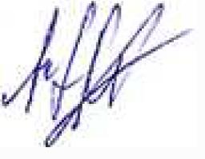

PET-CT with FDG (comparison with 17.08.2023 and 11.04.2023)
PET-CT of 14 Mar 2024 — images from the study
CT sheet, 12 levels through the liver

CT + FDG uptake sheet

Department of radiation diagnostics
Positron emission tomography combined with computed tomography with
18F-FDG
Patient Anastasia Stanislavivna Zherlitsyna
ID 110889
Date of birth 25-04-1976
Date of research 14-03-2024
Research methodology
A PET/CT scan was performed from the level of the orbits to the middle of the thighs 60 waves after the intravenous administration of 10.9 mCi of 18F-FDG. The level of glycemia before the introduction of the preparation of radiopharmaceuticals - 5.7 mmol/l.
CT scan was performed with intravenous contrast. An additional scan was performed at the level of the chest with a breath hold. Total DLP 1497 mGy*cm.
Attenuation correction of PET images was carried out on the basis of CT data. Standardized indicators of the preparation of radiopharmaceuticals accumulation are normalized by patient weight (SUV).
Purpose of study/clinical data
Control radiological evaluation after the treatment
Data from previous studies for comparison/correlation
PET-CT with FDG 17-08-2023, 11-04-2023
Findings:
Head and neck
As with previous imaging, hypermetabolic changes typical for a metabolically active aggressive neoplastic lesion were not found; without significant dynamics, there are no blood clots and aneurysms of large vessels.
Chest
As with previous imaging, hypermetabolic changes typical for a metabolically active aggressive neoplastic lesion were not found; the previously visualized small pulmonary nodules are stable, as well as the very small ones that appeared during the previous visualization; no new active/suspicious lung nodules were found.
Thymus elements, up to 23 mm thick, have a solid-fatty structure and a lambda-like configuration, demonstrate moderate diffuse activity, without separate hypermetabolic nodes, without dynamics.
Belly and pelvis
Known masses in the liver, as in the previous imaging, do not demonstrate significant activity or the appearance of new peripheral solid components, the part has reduced its overall size, dominant in the right lobe from 16 to 15 cm, in the left lobe from 5.0 to 4.5 cm.
No new hypermetabolic focal lesions were found in the liver parenchyma.
The known mass from the stomach wall is also now without active solid components, does not show increased accumulation of FDG, and has also decreased from 44 to 40 mm. Inactive masses in the uterus decreased again, for example, relatively cranial/largest from 96 to 78 mm, as in the previous imaging, show low activity, their structure without dynamics.
Otherwise, without significant dynamics, no new active/suspicious lesions were found.
Bones and soft tissues
As with the previous study, no hypermetabolic bone lesions were found, no structural/CT aggressive bone lesions were found, no dynamics.
Radiological conclusion:
Compared to 08/2023, a slight decrease in the inactive residual masses of the liver and stomach. Pulmonary nodules are stable, inactive nodes in the uterus that periodically fluctuate in size are currently smaller.
No new active/suspicious lesions found.
In general, the picture is radiologically stable, now there are no metabolically active components.
Sincerely, Novikov M. E.
radiologist,
head of the radiation diagnostics department
Israeli Oncology Hospital LISOD
